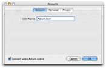
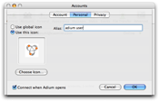
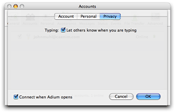

Setting up a Bonjour Account
Bonjour is a special service available only to users connected to the same Local Area Network that does not require a server or registering an account.
  
To Create a Bonjour Account:
- Choose Preferences from the Adium menu.
- Click the Accounts button at the top.
- Click the + button.
- Choose Bonjour from the menu.
- Enter your name in the Account panel.
- Enter your alias and choose an icon in the Personal panel
- Choose whether you would like to send typing notices in the Privacy panel.
- Click OK.